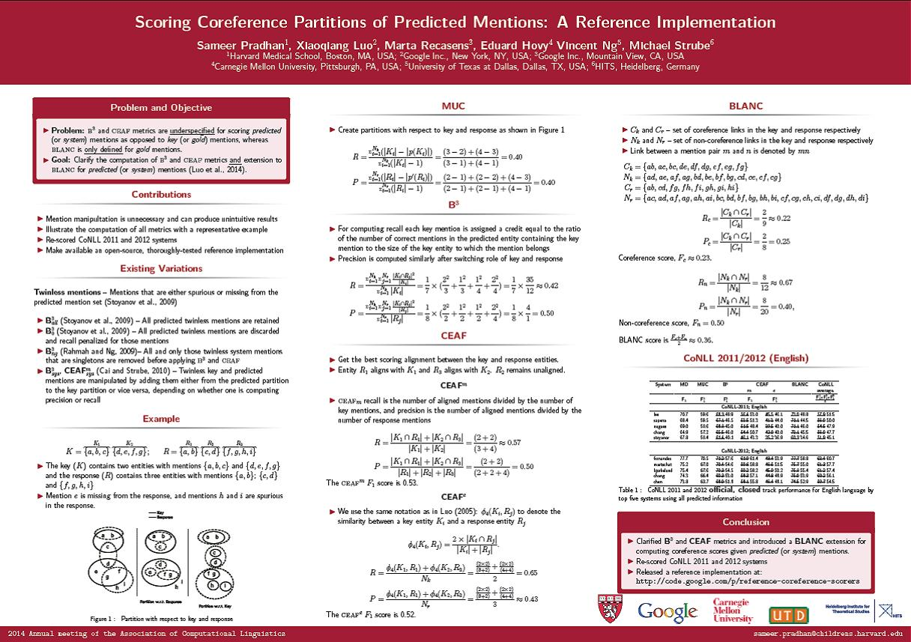

Scoring Coreference Partitions of Predicted Mentions: A Reference Implementation
Sameer Pradhan, Xiaoqiang Luo, Marta Recasens, Eduard Hovy, Vincent Ng, and Michael Strube.
Proceedings of the 52nd Annual Meeting of the Association for Computational Linguistics (Volume 2: Short Papers), pp. 30-35, 2014.
Click here for the PDF
version.
Abstract
The definitions of two coreference scoring
metrics --- B^3 and CEAF --- are underspecified
with respect to predicted, as opposed
to key (or gold) mentions. Several variations
have been proposed that manipulate
either, or both, the key and predicted mentions
in order to get a one-to-one mapping.
On the other hand, the metric BLANC was,
until recently, limited to scoring partitions
of key mentions. In this paper, we (i) argue
that mention manipulation for scoring
predicted mentions is unnecessary, and potentially
harmful as it could produce unintuitive
results; (ii) illustrate the application
of all these measures to scoring predicted
mentions; (iii) make available an open-source,
thoroughly-tested reference implementation
of the main coreference evaluation
measures; and (iv) rescore the results
of the CoNLL-2011/2012 shared task
systems with this implementation. This
will help the community accurately measure
and compare new end-to-end coreference
resolution algorithms.
Software
A reference implementation of the most commonly-used coreference scoring metrics
that can be applied to both gold and predicted mentions is available
here.
BibTeX entry
@InProceedings{Pradhan+etal:14a,
author = {Sameer Pradhan and Xiaoqiang Luo and Marta Recasens and Eduard Hovy and Vincent Ng and Michael Strube},
title = {Scoring Coreference Partitions of Predicted Mentions: A Reference Implementation},
booktitle = {Proceedings of the 52nd Annual Meeting of the Association for Computational Linguistics (Volume 2: Short Papers)},
pages = {30--35},
year = 2014}
